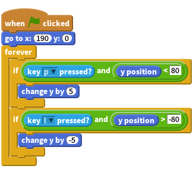
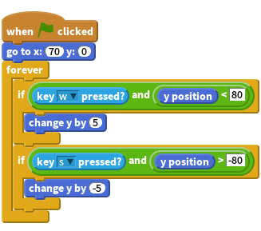
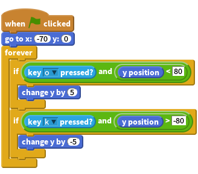
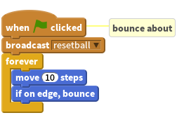
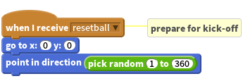
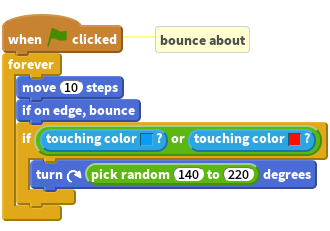
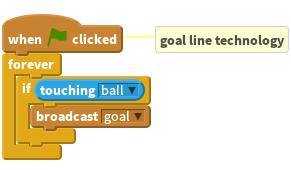
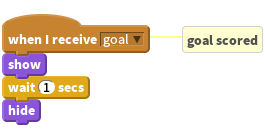
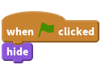

Community Contributed Project
This project was generously contributed by Mark Hardisty (idea, art, and original design) and Andy Lulham (editing and formatting as a Code Club project).
If you’d like to contribute a project of your own, then get in touch with us on Github.
Introduction
It’s the Football World Cup! So to celebrate, let’s make a world cup football game in Scratch!

Step 1: Get the pitch ready for a game
Activity Checklist
- Start a new project in Scratch.
- Click on the stage next to the sprite and switch to the
Backdropstab, then click theUpload backdrop from filebutton and choose the resources/pitch.jpg file. - Delete the original blank backdrop, and the cat sprite.
- Our goals need nets! Create a sprite using the
Upload sprite from filebutton and select resources/net.png. Move the net into the middle of the goal on the left. Rename it blue goal. - Right-click on the net sprite and click
duplicate, then move this new sprite to the goal on the right and rename it red goal.
Save your project
Step 2: Add a goalie
Okay – our pitch is looking good! Now let’s add some players and get them moving about.
Activity Checklist
- Click on
Upload sprite from fileand choose resources/goalie_blue.png. Rename the sprite blue goalie, and drag it near to the left goal. - Click on the
grow spritebutton, and click on the blue goalie sprite 10 times to scale up the sprite. Click on the
Scriptstab, and add:Let’s look at the code. We position the goalie, then we loop forever listening for key presses from the player. Q moves the goalie up, A moves it down. We check the
y positionof the goalie to stop it moving off the screen.
Test your project
Click the green flag.
- Can you control the goalie by pressing Q and A?
- What happens when it gets to the edges of the pitch?
Save your project
Step 3: Add some more players
We can’t play a game of football with just one player! We need to add some more.
Activity Checklist
- Create another sprite using the
Upload sprite from filebutton and selecting resources/goalie_red.png. - Change the name of the sprite to red goalie.
- Drag the sprite on the stage to the right-hand side just in front of the goal.
- Like before, grow the sprite 10 times so it is as big as the other goalie.
- Select the blue goalie sprite and drag the script to red goalie to duplicate it.
Select red goalie, and modify the script so it looks like this:

You should only have to change three things: the
x position, and which keys are pressed.
Test your project
Click the green flag.
- Can you control the red goalie by pressing P and L?
- Do the controls for the blue goalie still work?
Save your project
Step 4: Add some attacking players
Activity Checklist
- Create another sprite using the
Upload sprite from filebutton and selecting resources/attack_blue.png. Rename the sprite blue attack. - As before, grow the sprite 10 times, so the players are as big as the goalies.
- Move the sprite into the right-hand side of the pitch, so they are attacking the red team’s goal.
Drag the script from blue goalie to blue attack, and modify it to match this:

You should only have to change three things: thex position, and which keys are pressed.- Create one more sprite using the
Upload sprite from filebutton and selecting resources/attack_red.png. Rename sprite to red attack. - As before, grow the sprite 10 times, so all the players on the pitch are the same size.
- Move the sprite into the left-hand side of the pitch, so they are attacking the blue team’s goal.
Drag the script from blue attack to red attack, and modify it to match this:

You should only have to change three things: the
x position, and which keys are pressed.
Test your project
Click the green flag.
- Do you have two teams of working players now? Try pressing Q, A, W and S to control the blue team, and P, L, O and K to control the red team.
Save your project
Step 5: Add a bouncing ball
Our game of football has feet, but no ball! Let’s fix that.
Activity Checklist
- Click
Upload sprite from file - Select resources/ball.png, and rename the sprite ball.
In the
Scriptstab for the ball, add the following:
- Right-click on this script and click
add comment. Add the comment “bounce about”. Add another script to the ball:

This tells the ball to move to the middle of the pitch for kick-off, and then point in a random direction. Why do we useresetball?Don’t forget to add the “prepare for kick-off” comment, so we remember what this script does!
Test your project
Click the green flag.
- Does the ball move?
- What happens when it hits the edges?
- Are you happy with the ball speed? Try changing the
moveblock to have a smaller or larger number until you’re happy with it. - What happens when the ball hits your players?
Save your project
Step 6: Kicking the ball
We need the ball to bounce off the players on the pitch.
Modify the last code block you created (“bounce about”) to look like this:

You should select the colours by clicking on the football players. This change makes the ball sense it is touching a player, and then bounce off them by turning (with a bit of randomness).
Test your project
Press the green flag.
- What happens now when the ball hits your players? Is it working for both red and blue players?
Save your project
Step 7: GOOOOOOAAAAAALLLLLLLLL!!!!!!!!
Activity Checklist
Select red goal and add the following script:

This is like goal line technology - it runs all the time, checking whether the ball is touching the goal, and broadcasting a message when it is.- Drag the script to blue goal to copy it there as well.
- Now we need to do something when goal is broadcast. Click
Upload sprite from file. - Select resources/goal_text.png, and rename the sprite goal text.
Add this script to goal text:

Finally, add one more script to goal text:

…to ensure the goal text begins the game hidden.
Save your project
Test your project
You’re ready to play a game! Press the green flag.
- What happens when the ball goes in?
- Try challenging a partner to a game!
Challenge 1: Keep score
Can you add variables that will keep track of scores for the red and blue teams?
Challenge 2: Tip the table
You might notice sometimes the ball gets stuck bouncing where the players can’t reach. Can you add a script to the ball to fix this by “tipping the table” when the spacebar is pressed?
Challenge 3: Referee’s whistle
Can you add the sound effect resources/whistle.mp3 so that the whistle sounds whenever a kick-off takes place?